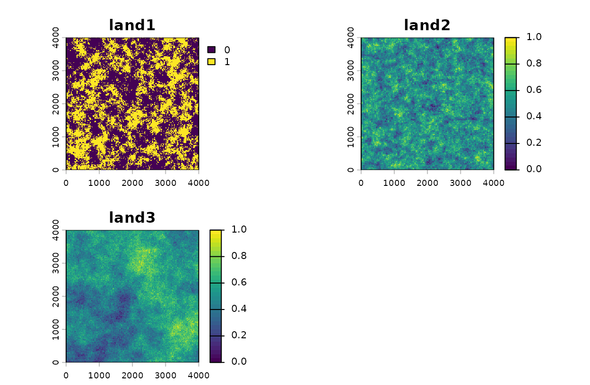
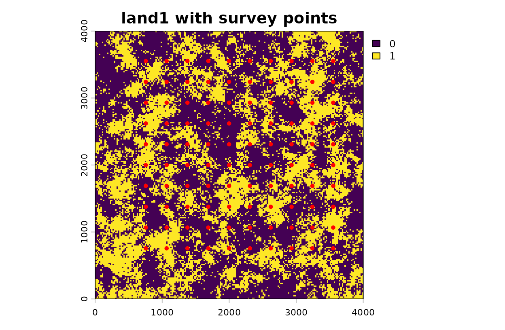
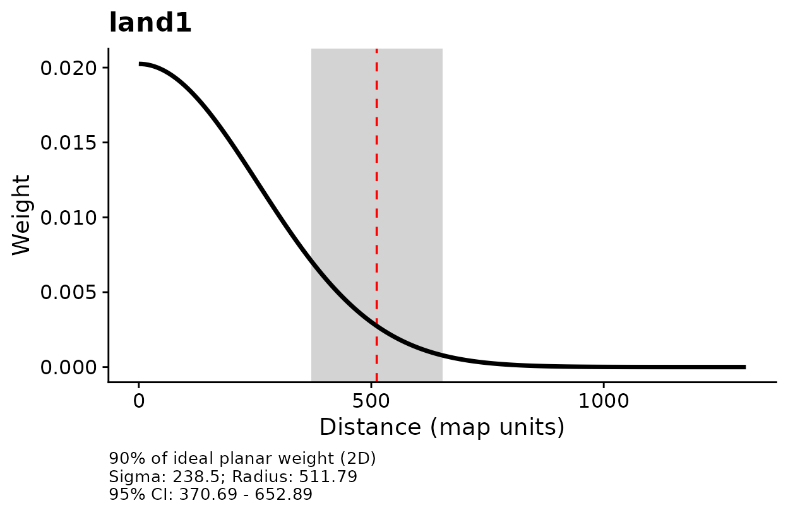
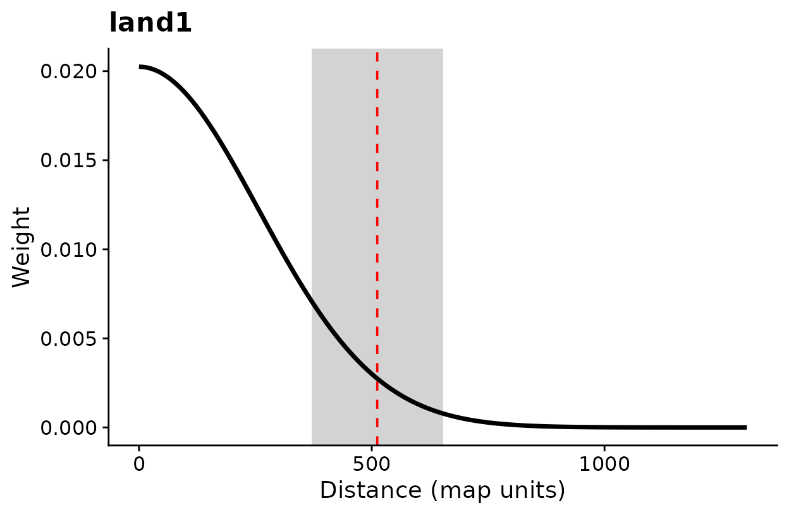
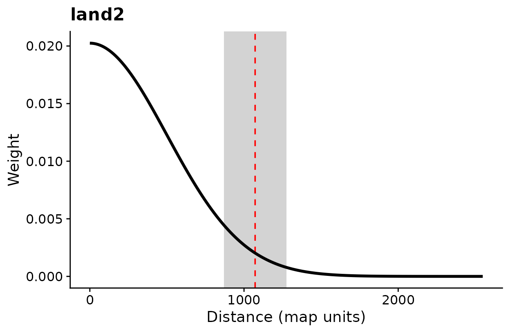
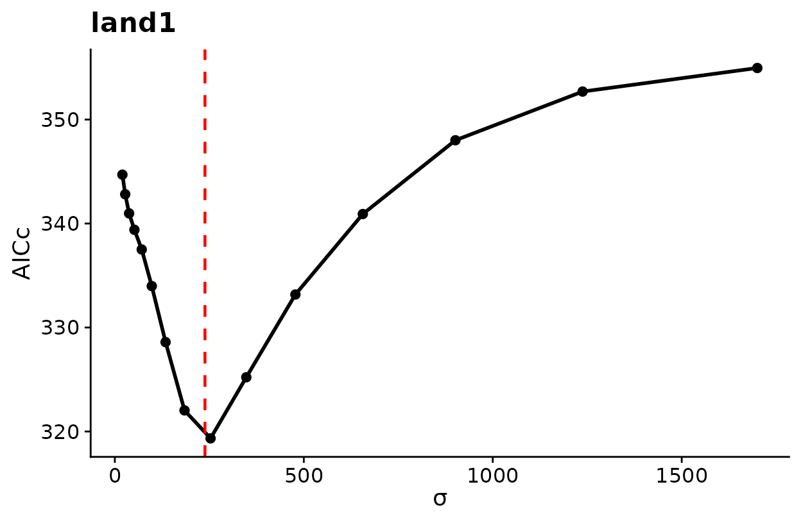
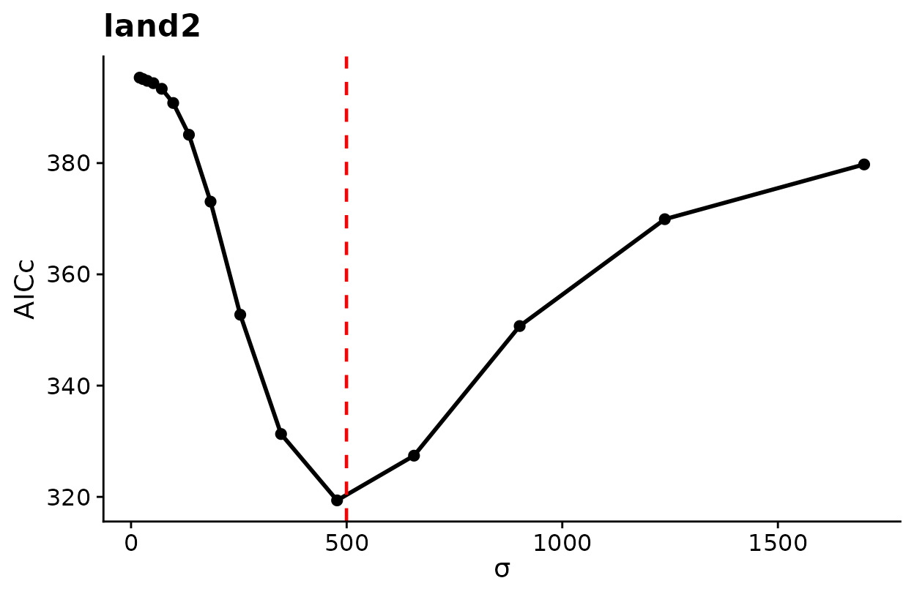
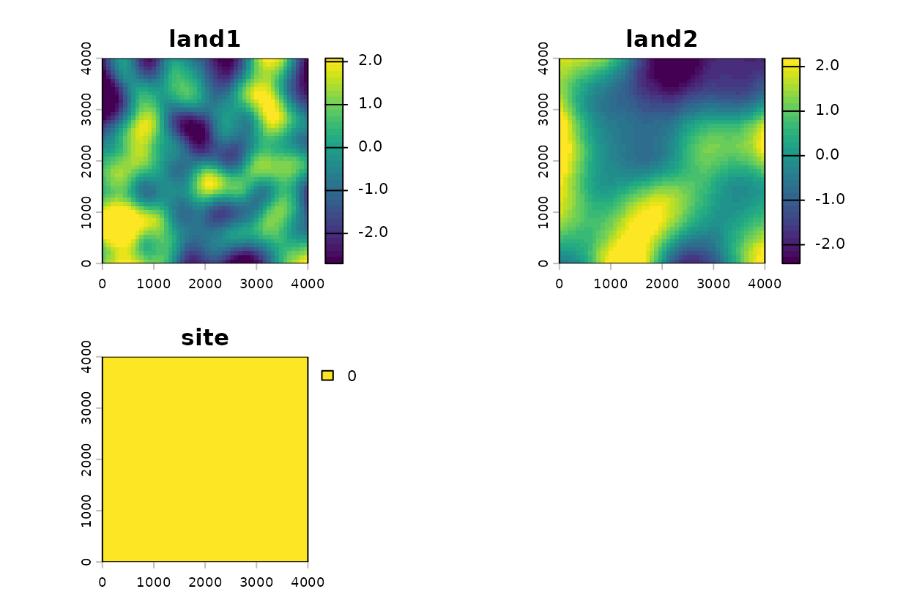
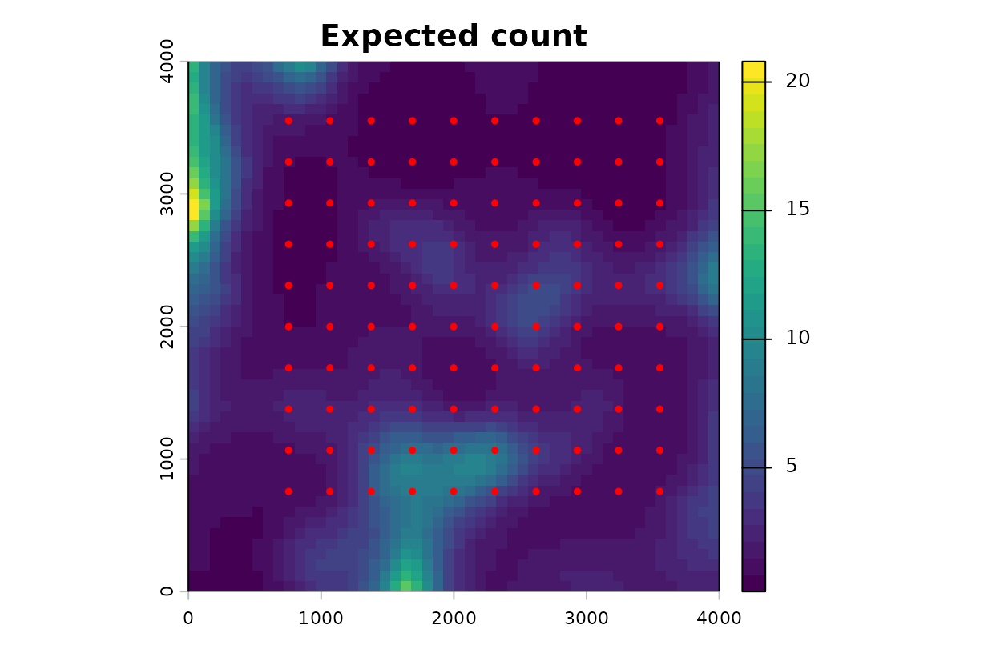

What multiScaleR does
multiScaleR estimates the scale of effect, or the
distance over which a landscape variable influences an ecological
response measured at survey locations. You do not test a fixed set of
buffer radii. Instead, the package weights the landscape around each
survey point with a distance-decay kernel and estimates the kernel
width, sigma, as a parameter of your regression model. You get a scale
estimate with a standard error and confidence interval, alongside the
familiar regression coefficients.
This guide takes about ten minutes. It fits one count model to data
bundled with the package and shows how to read every result. It assumes
you can fit a generalized linear model with glm() and have
used terra to read a raster. When you finish, the table in
Where to go next points to the vignette
for your next question.
Install the package
install.packages("multiScaleR")The workflow in four steps
Every multiScaleR analysis follows the same four
steps.
-
Prepare the inputs with
kernel_prep(). This extracts the raster values around each survey point and stores what the optimizer needs. -
Fit a starting model with an ordinary regression
function such as
glm(). The model formula and family carry through to the next step. -
Estimate the scales of effect with
multiScale_optim(). This finds the sigma for each landscape covariate and the regression coefficients that together maximize the model likelihood. -
Read and map the results with
summary(),plot(),plot_marginal_effects(),profile_sigma(), andkernel_scale.raster().
Work through an example
Load the data
The package includes a simulated data set of counts at 100 survey locations and a raster with three landscape layers.
data("landscape_counts") # data frame: counts and one site-level covariate
dat <- landscape_counts
data("surv_pts") # survey locations (an sf object from the package)
pts <- vect(surv_pts) # convert to a terra SpatVector
# Three landscape layers on one grid, in meters
land_rast <- rast(system.file("extdata", "landscape.tif",
package = "multiScaleR"))The counts were simulated from known values, which lets you check each estimate against the truth later in this guide.
| Quantity | True value |
|---|---|
Scale of effect (sigma) for land1, a
binary habitat layer |
250 m |
Scale of effect (sigma) for land2, a
continuous layer |
500 m |
Effect of land1 on log expected count |
-0.5 |
Effect of land2 on log expected count |
0.7 |
Effect of site, a covariate measured at
the survey point |
0.3 |
land3, a continuous layer |
No effect |
plot(land_rast)
The three landscape layers, and the survey points over
land1.
plot(land_rast$land1, main = "land1 with survey points")
points(pts, pch = 19, cex = 0.6, col = "red")
The three landscape layers, and the survey points over
land1.
Prepare the kernel inputs
kernel_prep() extracts the raster values within
max_D map units of each survey point and computes a first
set of distance-weighted covariate values. The map units here are
meters.
kernel_inputs <- kernel_prep(
pts = pts, # survey locations
raster_stack = land_rast, # landscape layers to summarize
max_D = 1700, # largest distance (m) considered around a point
kernel = "gaussian", # shape of the distance-decay function
verbose = FALSE
)Choosing max_D: Set max_D
to a distance you are confident exceeds the true scale of effect. If you
are unsure, err toward a larger value, because the optimizer can only
search within that distance. The cost is computation, since a larger
max_D means more raster cells to process. If
multiScale_optim() later warns that a sigma estimate is
close to max_D, increase max_D and run
kernel_prep() again.
The kernel-weighted covariates are in
kernel_inputs$kernel_dat, one row per survey point. They
are centered and scaled, so each has a mean of zero and a standard
deviation of one. Combine them with the response data.
df <- data.frame(dat, kernel_inputs$kernel_dat)
head(df, 3)
#> counts site land1 land2 land3
#> 1 0 0.9919247 0.9588974 -0.1501063 0.6937213
#> 2 2 1.9921151 0.5647553 0.7262473 0.9235087
#> 3 7 0.2997527 -0.1320171 0.5132579 0.4549547Fit a starting model
Fit the regression model you intend to optimize.
multiScale_optim() inherits the formula and family from
this model, so settle the model structure here. The coefficients at this
stage are only starting values, because the landscape covariates were
weighted with a first guess at sigma.
Estimate the scales of effect
multiScale_optim() searches over sigma for each
landscape covariate, refits the regression at each candidate, and keeps
the combination with the highest likelihood.
opt <- multiScale_optim(fitted_mod = mod,
kernel_inputs = kernel_inputs)Larger problems can run in parallel with n_cores, which
needs more memory. estimate_multiscale_ram() reports how
much. If a model has several landscape covariates and the result seems
sensitive to its starting values, see the screened-start option in
vignette("v02-user-guide", package = "multiScaleR").
Read the summary
summary(opt)
#>
#> Call:
#> multiScale_optim(fitted_mod = mod, kernel_inputs = kernel_inputs)
#>
#>
#> Kernel used:
#> gaussian
#>
#> ***** Optimized Scale of Effect *****
#>
#> Mean SE 2.5% 97.5%
#> land1 238.4880 33.12452 172.7364 304.2397
#> land2 499.5767 47.47055 405.3484 593.8050
#>
#>
#> ====================================
#>
#> ***** Optimized Scale of Effect -- Distance *****
#> Scale distances (map units) at 90%, two definitions.
#>
#> 2D, radius of the circle for the ideal untruncated kernel (selected):
#> Mean 2.5% 97.5%
#> land1 511.79 370.69 652.89
#> land2 1072.07 869.86 1274.29
#>
#> 1D, along a line through the point (comparison):
#> Mean 2.5% 97.5%
#> land1 392.28 284.13 500.43
#> land2 821.73 666.74 976.72
#>
#>
#> ====================================
#>
#> ***** Fitted Model Summary *****
#>
#>
#> Call:
#> glm(formula = counts ~ site + land1 + land2, family = poisson(),
#> data = data)
#>
#> Coefficients:
#> Estimate Std. Error z value Pr(>|z|)
#> (Intercept) 0.39291 0.09098 4.319 1.57e-05 ***
#> site 0.17482 0.08246 2.120 0.034 *
#> land1 -0.48628 0.07923 -6.138 8.38e-10 ***
#> land2 0.62571 0.07245 8.636 < 2e-16 ***
#> ---
#> Signif. codes: 0 '***' 0.001 '**' 0.01 '*' 0.05 '.' 0.1 ' ' 1
#>
#> (Dispersion parameter for poisson family taken to be 1)
#>
#> Null deviance: 224.24 on 99 degrees of freedom
#> Residual deviance: 109.57 on 96 degrees of freedom
#> AIC: 314.25
#>
#> Number of Fisher Scoring iterations: 5
#>
#>
#>
#> ***** Follow-up recommendation *****
#> Recommended `max_D`: 1700
#> Recommended starting `sigma` values:
#> land1 land2
#> 238.4880 499.5767
#>
#> Action:
#> Use the optimized parameters as efficient starting values if refitting.How to read the summary() output: The
output has four parts.
- Optimized Scale of Effect. One row per landscape covariate, with the estimated sigma in map units (meters here), its standard error, and a 95% confidence interval.
- Optimized Scale of Effect, Distance. Sigma is a kernel parameter, not a radius. This block converts it to an effective distance. The first table, marked “selected”, gives the radius of the circle that holds 90% of the kernel weight. Report this distance when you describe how far the landscape effect extends. The second table is an older, line-based definition kept for comparison.
- Fitted Model Summary. The regression table from the final model. For this Poisson model the coefficients are on the log scale, so exponentiate them to get a multiplicative change in the expected count.
-
Follow-up recommendation. Starting values and a
max_Dto reuse if you refit the model.
The lines below pull those quantities out of the fitted object.
est <- summary(opt)$opt_scale # sigma, SE, and 95% interval (m)
dist90 <- kernel_dist(opt) # radius holding 90% of kernel weight (m)
effects <- exp(coef(opt$opt_mod)) # multiplicative change in expected count
round(dist90)
#> Mean 2.5% 97.5%
#> land1 512 371 653
#> land2 1072 870 1274
round(effects, 2)
#> (Intercept) site land1 land2
#> 1.48 1.19 0.61 1.87Three statements follow from these numbers.
- The estimated sigma for
land1is 238 m. A Gaussian kernel of that width places 90% of its weight within 512 m of a survey point, so habitat within roughly that distance shapes the count. - The estimated sigma for
land2is 500 m, an effective distance of 1072 m.land2acts over about twice the distance ofland1. - The landscape covariates are standardized, so each coefficient
describes a change of one standard deviation. A one standard deviation
increase in kernel-weighted
land1multiplies the expected count by 0.61, a decrease of 39%. The same increase inland2multiplies it by 1.87, an increase of 87%.
Because the data are simulated, you can compare each estimate with its true value.
ci_beta <- confint.default(opt$opt_mod) # Wald 95% intervals, log scale
check <- data.frame(
Parameter = c("sigma, land1 (m)", "sigma, land2 (m)",
"effect of land1", "effect of land2", "effect of site"),
Truth = c(250, 500, -0.5, 0.7, 0.3),
Estimate = c(est[, "Mean"], coef(opt$opt_mod)[c("land1", "land2", "site")]),
Lower = c(est[, "2.5%"], ci_beta[c("land1", "land2", "site"), 1]),
Upper = c(est[, "97.5%"], ci_beta[c("land1", "land2", "site"), 2])
)
# Does each 95% interval contain the value used to simulate the data?
check$Covered <- check$Truth >= check$Lower & check$Truth <= check$Upper
knitr::kable(check, digits = 2, row.names = FALSE)| Parameter | Truth | Estimate | Lower | Upper | Covered |
|---|---|---|---|---|---|
| sigma, land1 (m) | 250.0 | 238.49 | 172.74 | 304.24 | TRUE |
| sigma, land2 (m) | 500.0 | 499.58 | 405.35 | 593.80 | TRUE |
| effect of land1 | -0.5 | -0.49 | -0.64 | -0.33 | TRUE |
| effect of land2 | 0.7 | 0.63 | 0.48 | 0.77 | TRUE |
| effect of site | 0.3 | 0.17 | 0.01 | 0.34 | TRUE |
How to read the table: Covered is
TRUE when the 95% interval contains the true value. One
simulated data set cannot show that the intervals are reliable in
general, but it does show what recovery looks like when the model
matches the process that generated the data.
What this means for your study. Report the effective distance, not sigma alone, and say which weight it refers to (90% by default). The coefficient standard errors in the regression table treat the estimated sigma values as known.
vignette("v09-estimates-and-intervals", package = "multiScaleR")explains what that leaves out and when it matters.
By default, the sigma intervals come from the optimizer’s standard
errors (the delta method). When the sample is small or an estimate sits
near max_D, request profile-likelihood intervals with
summary(opt, profile = TRUE). They take longer to compute
and do not assume a symmetric likelihood.
Plot the kernels and the covariate effects
plot(opt)
Kernel weight against distance for each landscape covariate.

Kernel weight against distance for each landscape covariate.
How to read these plots: Each curve shows how the
weight given to a raster cell declines with its distance from the survey
point. The dashed line marks the effective distance from
summary(), the radius that holds 90% of the kernel weight,
and the gray band is its 95% confidence interval. The three lines of
text under each panel repeat sigma, that radius, and its interval. A
curve that falls quickly means the response depends on nearby landscape.
A curve that falls slowly means distant landscape still counts.
The text under each panel is useful while you explore a fit, but a
figure for a manuscript or a slide usually reads better without it. Set
add_label = FALSE to draw the same panels with no text
beneath them. The dashed line and the gray band stay.
plot(opt, add_label = FALSE)
The same kernel plots without the text under each panel.

The same kernel plots without the text under each panel.
Versions through 0.7.3 reported a line-based distance, which is
shorter (about 1.65 sigma at 90% for a Gaussian kernel, against about
2.15 sigma for the circle). Set dimension = "1d" in
summary(), plot(), or
kernel_dist() to reproduce those earlier values. The fitted
model is the same either way.

Estimated effect of each covariate on the expected count.

Estimated effect of each covariate on the expected count.

Estimated effect of each covariate on the expected count.
How to read these plots: Each panel shows the
expected count across the observed range of one covariate, with the
other covariates held at their means. The horizontal axis is in the
covariate’s own units. For land1, a binary habitat layer,
that is the kernel-weighted proportion of habitat around a survey point.
The shaded band is a 95% confidence band for the expected count. The
band treats the estimated scales as known, so it does not include
uncertainty in sigma. Set add_label = TRUE if you want that
reminder printed under each panel.
Check that each scale is well identified
profile_sigma() refits the model across a range of sigma
values for one covariate at a time, holding the other scales at their
estimates.
prof <- profile_sigma(opt, n_pts = 15) # 15 sigma values per covariate
plot(prof)
AICc across candidate sigma values. The dashed line marks the estimate.

AICc across candidate sigma values. The dashed line marks the estimate.
How to read these plots: Lower AICc means better support. A clear trough near the dashed line means the data identify that scale well. A flat profile, or one that keeps falling toward the edge of the search range, means the data say little about that scale, and its interval should be read with caution.
Map the fitted model
kernel_scale.raster() applies each fitted kernel to the
whole raster. With scale_center = TRUE it also standardizes
the result with the mean and standard deviation used in fitting, so the
layers can go straight into terra::predict().
r_scaled <- kernel_scale.raster(raster_stack = land_rast,
multiScaleR = opt, # the fitted object
scale_center = TRUE, # same scaling as the model
clamp = TRUE) # stay within the fitted range
# Expected count in every raster cell
pred <- terra::predict(r_scaled, opt$opt_mod, type = "response")
Landscape layers smoothed at their estimated scales, in standard deviation units.

Expected count across the landscape, with survey points.
How to read these plots: The first figure shows each
landscape layer after kernel weighting. Its values are in standard
deviation units of the data used to fit the model, so zero is the
average survey point. The second figure is the expected count per cell
from the fitted model. With clamp = TRUE, cells whose
covariate values fall outside the range seen at the survey points are
held at the nearest observed value, which keeps the model from
extrapolating.
The largest expected counts lie along the western and southern
borders, beyond the outermost survey points. The smoothed covariates
there fall outside the range seen at the survey points, so clamping
holds each one at its surveyed limit. The result is a combination that
no survey point had, so read the border with caution.
vignette("v03-map-predictions", package = "multiScaleR")
covers projection beyond the sampled conditions in detail.
Quick reference
The full workflow in one block.
library(multiScaleR)
library(terra)
# 1. Load the data
data("landscape_counts"); data("surv_pts")
pts <- vect(surv_pts)
land_rast <- rast(system.file("extdata", "landscape.tif",
package = "multiScaleR"))
# 2. Prepare the kernel inputs
kernel_inputs <- kernel_prep(pts = pts, raster_stack = land_rast,
max_D = 1700, kernel = "gaussian")
# 3. Fit a starting model
df <- data.frame(landscape_counts, kernel_inputs$kernel_dat)
mod <- glm(counts ~ site + land1 + land2, family = poisson(), data = df)
# 4. Estimate the scales of effect
opt <- multiScale_optim(fitted_mod = mod, kernel_inputs = kernel_inputs)
# 5. Read the results
summary(opt) # sigma, effective distance, regression table
summary(opt, profile = TRUE) # profile-likelihood intervals for sigma (slower)
kernel_dist(opt) # radius holding 90% of the kernel weight
exp(coef(opt$opt_mod)) # multiplicative change in expected count
plot(opt) # kernel weight against distance
plot(opt, add_label = FALSE) # the same plot without the text beneath it
plot_marginal_effects(opt) # expected count across each covariate
plot(profile_sigma(opt)) # AICc across sigma: is each scale identified?
# 6. Map the fitted model
r_scaled <- kernel_scale.raster(land_rast, multiScaleR = opt,
scale_center = TRUE, clamp = TRUE)
pred <- terra::predict(r_scaled, opt$opt_mod, type = "response")Summary of key functions
| Function | Purpose |
|---|---|
kernel_prep() |
Extract raster values around each survey point and prepare the optimizer inputs |
multiScale_optim() |
Estimate sigma for each landscape covariate together with the regression coefficients |
summary() |
Report sigma, the effective distance, and the regression table |
kernel_dist() |
Convert sigma to the distance that holds a chosen share of the kernel weight |
plot() |
Draw kernel weight against distance |
plot_marginal_effects() |
Draw the expected response across each covariate |
profile_sigma() |
Check how well the data identify each scale |
kernel_scale.raster() |
Apply the fitted kernels to a raster for mapping and prediction |
Where to go next
| If you want to | Read |
|---|---|
Understand kernels, intervals, and model selection in
depth, or fit unmarked models |
vignette("v02-user-guide", package = "multiScaleR") |
| Map predictions beyond the conditions you sampled | vignette("v03-map-predictions", package = "multiScaleR") |
| Use land-cover composition or configuration, such as edge density or Shannon diversity | vignette("v04-landscape-metrics", package = "multiScaleR") |
| Use the roughness or texture of a continuous surface | vignette("v05-surface-metrics", package = "multiScaleR") |
| Analyze surveys from several years, each with its own map | vignette("v06-year-specific-rasters", package = "multiScaleR") |
| Combine covariate types and choose a fitting method | vignette("v07-fitting-methods", package = "multiScaleR") |
| Compare models by how well they predict held-out data | vignette("v08-cross-validation", package = "multiScaleR") |
| Know what an interval includes and what it leaves out | vignette("v09-estimates-and-intervals", package = "multiScaleR") |
| Fit step-selection models to animal movement data | vignette("v10-step-selection", package = "multiScaleR") |
| Account for spatial autocorrelation with a spatial field | vignette("v11-spatial-fields", package = "multiScaleR") |
| Fit distance-removal models to point-count data | vignette("v12-distance-removal", package = "multiScaleR") |
| Let the scale of effect vary among years in a Bayesian model | vignette("v13-bayesian-scales", package = "multiScaleR") |
| Predict new sites or years from a Bayesian fit | vignette("v14-bayesian-prediction", package = "multiScaleR") |
| Choose and check a faster Bayesian approximation | vignette("v15-bayesian-computation", package = "multiScaleR") |
| Combine several surveys to estimate a shared scale of effect | vignette("v16-joint-data-sets", package = "multiScaleR") |
| Look up a term used in these vignettes | ?"multiScaleR-glossary" |